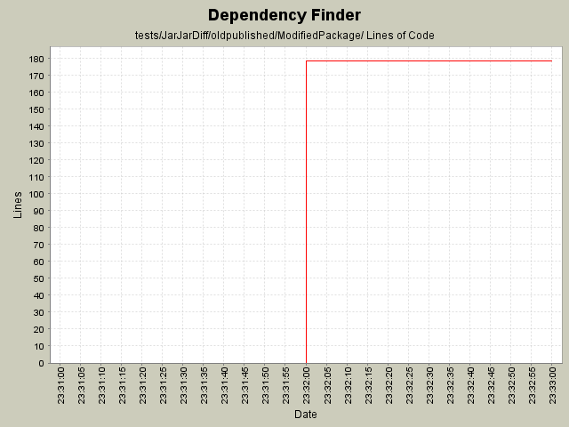

Summary Period: 2005-11-07 to 2005-11-07
[root]/tests/JarJarDiff/oldpublished/ModifiedPackage

Total Lines Of Code:
178 (2006-01-04 08:56)
| Author | Changes | Lines of Code | Lines per Change |
|---|---|---|---|
| jeantessier | 22 (100.0%) | 178 (100.0%) | 8.0 |
Merge redesign for published API JarJarDiff
178 lines of code changed in:
Generated by StatCVS 0.2.2